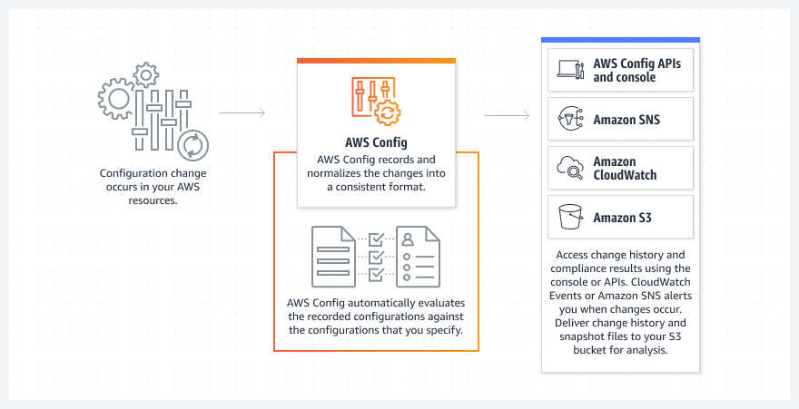

Beschreibung
Konfigurationsmanagement ist ein wichtiger Bestandteil der geteilten Verantwortung für Sicherheit und Compliance bei
AWS. Während AWS die Infrastruktur überwacht und pflegt, liegt es in der Verantwortung des Kunden,
Betriebssysteme, Datenbanken und Anwendungen zu konfigurieren. Dieser gemeinsame Ansatz stellt sicher, dass sowohl AWS
als auch der Kunde ihren Beitrag zur Sicherheit und Compliance leisten.
Sicherheit und Compliance bei AWS sind aufgeteilt in die Verantwortungsbereiche von AWS selbst und den Kunden. AWS
übernimmt die Sicherheit der zugrunde liegenden Infrastruktur, einschließlich Netzwerke, Rechenzentren und der
physischen Sicherheit. Dies schafft eine solide Basis, auf der Kunden ihre Anwendungen und Daten betreiben können.
Der
Kundenbereich der geteilten Verantwortung beinhaltet die Konfiguration von Betriebssystemen, Datenbanken und
Anwendungen. Hier spielt das Konfigurationsmanagement eine entscheidende Rolle. Konfigurationsmanagement bezieht
sich auf die systematische Verwaltung und Kontrolle von Konfigurationsänderungen in der IT-Infrastruktur. Das bedeutet,
dass Kunden sicherstellen müssen, dass ihre Systeme und Anwendungen gemäß bewährten Sicherheitspraktiken und
Compliance-Standards konfiguriert sind.
Durch das sorgfältige Konfigurationsmanagement können potenzielle
Sicherheitslücken minimiert und Compliance-Anforderungen erfüllt werden. Dies beinhaltet die Aktualisierung von
Betriebssystemen, die Implementierung sicherer Zugriffskontrollen, die Verschlüsselung von Daten und andere
sicherheitsrelevante Konfigurationen.
Insgesamt gewährleistet die gemeinsame Verantwortung für Sicherheit und Compliance
eine umfassende Abdeckung, bei der sowohl die robuste Infrastruktur von AWS als auch die sorgfältige Konfiguration durch
den Kunden zusammenkommen, um eine sichere und konforme Cloud-Nutzung zu gewährleisten.
-Wichtiger Bestandteil der geteilten Verantwortung für Sicherheit und Compliance bei AWS
- AWS überwacht und pflegt die Infrastruktur, während Kunden für die Konfiguration von Betriebssystemen, Datenbanken
und Anwendungen verantwortlich sind
-Sicherheit und Compliance bei AWS sind aufgeteilt in die Verantwortungsbereiche von AWS selbst und den Kunden
-AWS sichert die zugrunde liegende Infrastruktur, während Kunden ihre Anwendungen und Daten betreiben
-Kunden verantwortlich für die Konfiguration von Betriebssystemen, Datenbanken und Anwendungen
-Konfigurationsmanagement ist entscheidend im Kundenbereich der geteilten Verantwortung.
-Systematische Verwaltung und Kontrolle von Konfigurationsänderungen in der IT-Infrastruktur>
-Kunden müssen sicherstellen, dass Systeme und Anwendungen gemäß bewährten Sicherheitspraktiken und
Compliance-Standards konfiguriert sind
-Potenzielle Sicherheitslücken minimieren und Compliance-Anforderungen erfüllen durch sorgfältiges
Konfigurationsmanagement
-Aktualisierung von Betriebssystemen, Implementierung sicherer Zugriffskontrollen, Verschlüsselung von Daten und
andere sicherheitsrelevante Konfigurationen
-Gemeinsame Verantwortung für Sicherheit und Compliance gewährleistet umfassende Abdeckung und sichere
Cloud-Nutzung
Schlüsselwörter
Schlüsselworte bzw. Schlagworte sollen uns dabei helfen, einen Service leichter zu erkennen, wenn es um Prüfungsfragen geht. Ließ dir die Fragen richtig durch und achte auf folgende Schlüsselworte. Sie können dir bei der Beantwortung der Fragen helfen.
- Konfigurationsmanagement
- Ressourcenauditing
- Compliance-Überwachung
- Automatisierte Compliance-Bewertungen
- Änderungsverfolgung
- Konfigurationsänderungsbenachrichtigungen
- Historische Ressourcenansichten
- Automatisierte Reaktionen auf Konfigurationsänderungen
- Konformitätsprüfungen
- Integration mit AWS CloudTrail
Grafische Erklärung
Prüfung Fragen
- Wie können benutzerdefinierte Regeln in AWS Config konfiguriert werden, um die Einhaltung von Unternehmensrichtlinien zu überprüfen?
- Welche Vorteile bietet die Integration von AWS Config mit AWS CloudTrail für die Sicherheitsüberwachung?
- Welche Maßnahmen können mithilfe von AWS Config und AWS Systems Manager Automation durchgeführt werden?